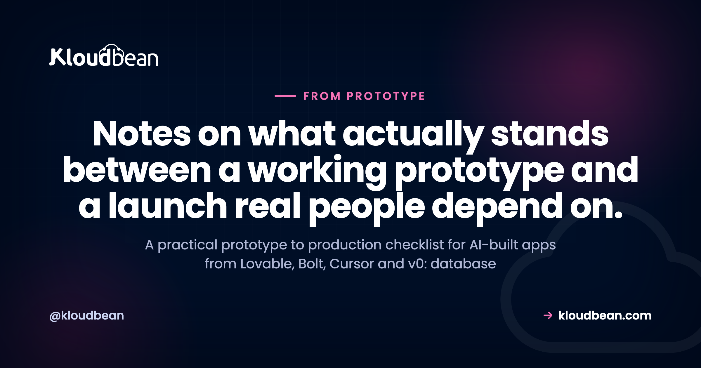
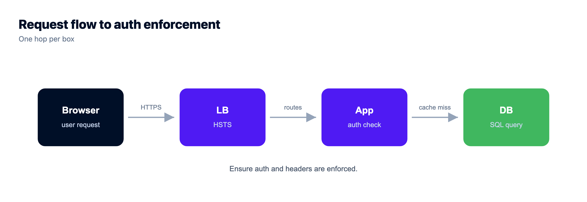
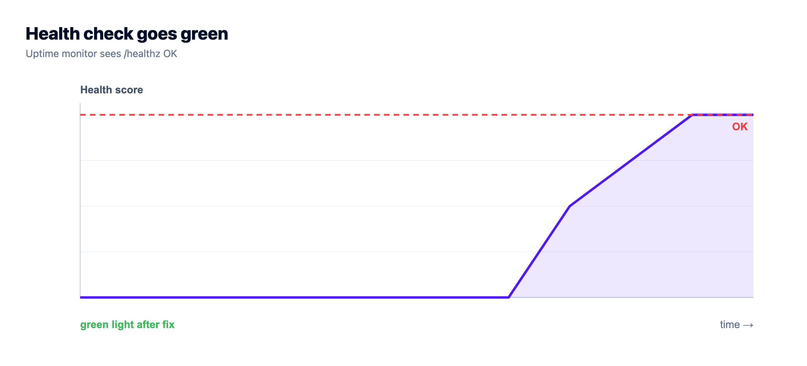
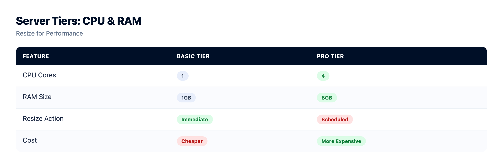

The Prototype to Production Checklist for AI-Built Apps

You built something with Lovable, Bolt, Cursor, Replit, or v0, and it works. It logs in, it saves data, it looks the part on localhost. Now you want strangers to use it. This is the prototype to production checklist for exactly that moment: the specific things you check before you take a prototype to production, why each one matters, and the fix.
Before you ship an AI-built prototype: move state off SQLite or local files onto a managed database, put secrets in server env vars and scrub keys from Git, add real auth plus input validation and security headers, force HTTPS, turn on automatic backups and actually test a restore, send uploads to object storage, add a health check, right-size the server, and wire up Git deploys so shipping is repeatable. That list is most of the gap.
The full walk-through of the deploy itself lives in how to deploy an AI-built app to production. This piece is the readiness checklist that sits next to it. Print it, argue with it, tick it off.
How to use this prototype to production checklist
Work top to bottom, but know the weighting. The first four areas (data, secrets, security, backups) are the ones that hurt when skipped. Lose your database, leak an API key, ship an admin route with no server-side check, or find your backups never ran: those are the launches that go wrong. Performance and ops matter, but rarely cost you data or customers on day one. Short on time? Start at the top.
Here's the whole thing as one table, prototype default against production fix. It doubles as an AI app production checklist you can scan in half a minute.
| Area | Prototype default (the risk) | Production fix |
|---|---|---|
| Data | SQLite or a local file, wiped on redeploy | Managed PostgreSQL or MySQL, backed up |
| Uploads | Files saved to the app's disk | Object storage, off the app server |
| Secrets | Keys pasted in code or a committed .env | Server env vars, scrubbed from Git |
| Auth | Routes with no server-side check | Real auth, input validation, security headers |
| Transport | Plain HTTP, or a temporary URL | Your domain over HTTPS, auto-renewing SSL |
| Backups | None, or never restored | Automatic backups, restore tested |
| Health | You find out it's down from users | A health check and an always-on process |
| Sizing | Guessed, or a build that runs out of memory | Right-sized, resize when you grow |
| Deploys | SSH in and copy files, and pray | Repeatable Git deploys with logs |
Data: your state has to outlive a redeploy
Move off SQLite or the local file onto a managed database
Check: where does your data actually live right now? If the answer is a .sqlite file or anything on the app's own disk, that's the first thing to fix.
Why it matters: this is the most common way a launch goes sideways. Generated apps default to SQLite because it needs zero setup, and it's genuinely great in development. But on many hosts the filesystem is ephemeral, so the next deploy resets the disk and takes every signup with it. The story repeats: the app runs fine for a day, someone pushes a small fix, and a day of real user data is gone. SQLite also locks the file to write, so a few concurrent users start queuing behind each other.
Fix: launch a managed PostgreSQL or MySQL and point your app at it through a connection string. Your ORM already speaks all three engines, so it's usually a config change plus a migration, not a rewrite. The full walk-through, with Prisma, Django, Laravel, and Rails examples, is in add a managed database to your app.

Send user uploads to object storage, not the app disk
Check: when a user uploads an avatar or a PDF, where does the file land? If it's a folder inside your app, you have the SQLite problem again, just with files.
Why it matters: files on the app server disappear on the next deploy, and they can't be shared if you ever run a second app instance. Disk also fills up quietly, and a full disk takes the whole app down, not just uploads.
Fix: write uploads to S3-compatible object storage and store just the URL in your database. It survives redeploys, scales without thought, and keeps your server disk for the app. There's a full guide in S3-compatible object storage.
Config and secrets: nothing sensitive in the repo
Put secrets in server env vars, and scrub keys from Git
Check: search your codebase for your own API keys. Grep for sk-, for your database password, for any token. Then check your Git history, not just the current files.
Why it matters: AI builders love to inline a key to make the demo work, and it's the fastest way to leak one. A committed key is public the moment the repo is, and bots scan public repos for exactly this within minutes. Rotating a hard-coded secret also means a code change and a redeploy, which is backwards.
Fix: move every secret into environment variables set on the server, not in the code. Add .env to .gitignore, and if a secret was ever committed, rotate it and strip it from history. The deeper patterns (per-environment values, what belongs in an env var, what doesn't) are in environment variables done right.
# stop tracking a committed .env, then rotate the keys it held
echo ".env" >> .gitignore
git rm --cached .env
git commit -m "Stop tracking .env"
# set the real values on the server as env vars instead
Security: assume someone hostile will find it
Add real auth, input validation, and security headers
Check: hit one of your data routes without logging in. Can you read or change something you shouldn't? Try a form field with a quote character or a script tag in it. Does anything break or execute?
Why it matters: generated code is quick, but it often trusts the client. A common pattern we see: an endpoint that checks auth in the UI but not on the server, so anyone calling the API directly walks right in. Unvalidated input is the doorway to SQL injection and stored XSS. Not exotic, just the standard ways small apps get popped.
Fix: enforce auth on the server for every route that touches data, not just in the frontend. Validate and sanitize input at the boundary. Add security headers (a content security policy, HSTS, sensible cookie flags). Use parameterized queries, which your ORM does by default, so don't hand-build SQL strings. For the platform-side controls and the shared-responsibility split, see secure and compliant hosting.

Force HTTPS with a free SSL certificate
Check: is your app on your own domain, over HTTPS, or is it still on a temporary preview URL over plain HTTP?
Why it matters: without HTTPS, logins and data cross the network in the clear, browsers slap a "Not secure" warning on you, and modern login and payment features simply refuse to work. A temporary builder URL also isn't yours; you can't put it on a business card or an invoice.
Fix: point your domain at the server and install a free, auto-renewing SSL certificate, then redirect HTTP to HTTPS. It's a few minutes of DNS plus one certificate. The exact steps are in custom domain and SSL for your app.
Reliability: it stays up, and it comes back
Turn on automatic backups, then test a restore
Check: are backups running? And the real question: have you ever restored one?
Why it matters: a backup you've never restored is a hope, not a backup. The failure mode is brutal and common: a bad migration or one wrong DELETE wipes a table, everyone reaches for the backups, and that's when they learn the restore path doesn't work. Not the moment to find out.
Fix: turn on automatic backups for the database and server, then run one real restore into a scratch environment so you know the path end to end. Do it before you have users, and put a reminder to repeat it. More on cadence and retention in the server backups guide.

Add a health check and keep the process always on
Check: if your app crashes at 3am, does anything restart it? And how would you even know it's down?
Why it matters: a dev process dies when the terminal closes and stays dead. In production you need something that keeps the app running around the clock and brings it back after a crash. A health endpoint gives you (and any monitor) a dead-simple way to ask "are you alive?" and get a straight answer.
Fix: expose a tiny health route and run the app under a real process manager. On Kloudbean, Node apps run under PM2, which restarts them automatically, so this is mostly handled for you once deployed. Add the endpoint anyway; monitors love it.
// a minimal health check your monitor (or a load balancer) can poll
app.get("/healthz", (req, res) => res.status(200).json({ ok: true }));
Performance: sized right, not sized huge
Pick the right server size, and know how to resize
Check: does your build actually complete on the size you picked? A lot of first deploys die mid-build with an out-of-memory error, not a code bug.
Why it matters: too small and your build gets killed or the app thrashes under load. Too big and you're burning money on idle capacity before you have a single user. Most small apps need far less than people fear. And most don't need a load balancer or clustering on day one; reach for those when the numbers say so, not before.
Fix: start modest but give a Node build real headroom (2GB of RAM is a sane floor for a build step). Plans start from $8/mo, so the entry cost is low. When traffic climbs, resize the server up; it's a dial, not a migration. A quick note on the honest boundary: automatic autoscaling is an enterprise and custom feature, not something a standard app does on its own, so plan to resize deliberately as you grow.

Two other traps sink small apps: a missing index that slows a query as data grows, and an ORM firing one query per row (the classic N+1). Add indexes on the columns you filter and join on, and cache hot reads in Redis. Don't tune on day one, but don't ignore a query that's already crawling.
Ops: shipping a change should be boring
Wire up Git deploys so shipping is repeatable
Check: how does a code change get to production today? If the honest answer involves SSH and dragging files around, that won't survive your third deploy.
Why it matters: manual deploys are how you ship the wrong branch, forget a build step, or leave the server in a half-updated state at the worst time. There's no clean rollback and no record of what shipped. Repeatable beats fast here.
Fix: connect your Git repo and deploy from it, so a push to your branch builds and ships automatically with logs you can watch. Your repo becomes the source of truth, not a folder on your laptop, and rolling back is just deploying the previous commit. It's the same loop covered end to end in the full deploy guide. If the project still only lives inside the builder, getting the code into a repo is step one, which is where moving a Replit app to your own server begins.

How far down the list do you really need to go?
Not every item is equal, and pretending otherwise wastes your time. If you're launching to a handful of early users this week, the non-negotiables are the top four: a real database, secrets out of the repo, auth on your data routes, and backups you've tested. Get those wrong and you lose data or trust. The rest you can tighten as you go.
What makes this less painful is keeping it in one place. When the database, env vars, backups, SSL, object storage, and Git deploy all live in one dashboard on a server you own, the checklist stops being ten chores across five vendors. That's the practical case for weighing Cloudways alternatives if your setup has you juggling pieces. One login, one bill, one place to tick these off.
One honest note on "managed." The platform provisions the server, patches the stack, runs SSL and backups, and locks the database down so only your app server's IP can reach it. You still own your application: its logic, its data, its app-level security. Compliance splits the same way, infrastructure controls on the platform, app behavior on you. A good deal, but not magic.
You built the app. Give it a real home.
Run the app as an always-on process with managed databases, Redis, object storage, and automatic backups beside it. Deploy from Git with live build logs, and keep the infrastructure someone else's problem.
- ✓ Managed databases
- ✓ Always-on processes
- ✓ Object storage
- ✓ Automatic backups
- ✓ Free SSL
- ✓ Git deploy
- ✓ Free migration
FAQ
What do I need to check before taking an AI-built prototype to production?
Nine things, roughly in priority order: move state off SQLite onto a managed database, put secrets in server env vars and scrub keys from Git, add auth plus input validation and security headers, force HTTPS with free SSL, turn on automatic backups and test a restore, send uploads to object storage, add a health check, right-size the server, and set up repeatable Git deploys. The first four are the ones that lose data or trust if you skip them.
Why does my app lose its data after every deploy?
It's storing data in SQLite or on the app's local disk, and that disk resets on redeploy. Move to a managed PostgreSQL or MySQL that lives independently and gets backed up. Usually a connection-string change plus your migrations.
Where should API keys and secrets go in production?
In environment variables set on the server, never in code or a committed .env. Add .env to .gitignore, and if a key was ever committed, rotate it and strip it from Git history. Env vars also let you rotate a secret without a code change.
Do I need a load balancer, and does the app autoscale on its own?
Most small apps need neither on day one. You scale first by resizing the server, and add a load balancer when traffic justifies it. Automatic autoscaling is an enterprise and custom feature, not something a standard app does by itself.
How do I add HTTPS to my app?
Point your domain's DNS at the server, install a free auto-renewing SSL certificate, and redirect HTTP to HTTPS. On Kloudbean the certificate is free and renews itself, so your app runs on your own domain instead of a temporary URL.
What server size should I start with?
Start modest but give the build real headroom; 2GB of RAM is a sane floor so it isn't killed with an out-of-memory error. Entry plans start from $8/mo. When traffic grows, resize up, which is a quick change, not a migration.
How do I make backups I can actually trust?
Turn on automatic backups for the database and server, then restore one into a scratch environment before you have users. A backup you've never restored is only a hope. Test the path once, and set a reminder to repeat it.
Where should user uploads go in production?
In S3-compatible object storage, with just the file URL saved in your database. Files on the app's local disk are lost on redeploy and can't be shared across instances. Object storage survives deploys and frees your server disk.